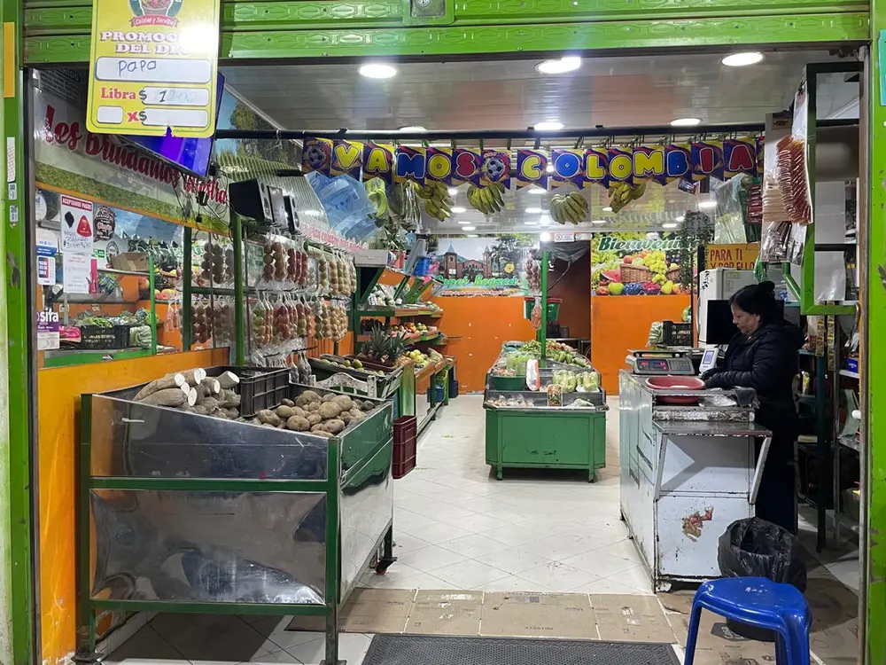
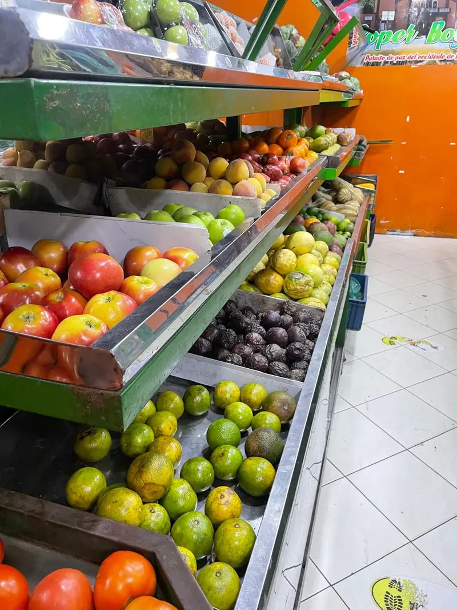
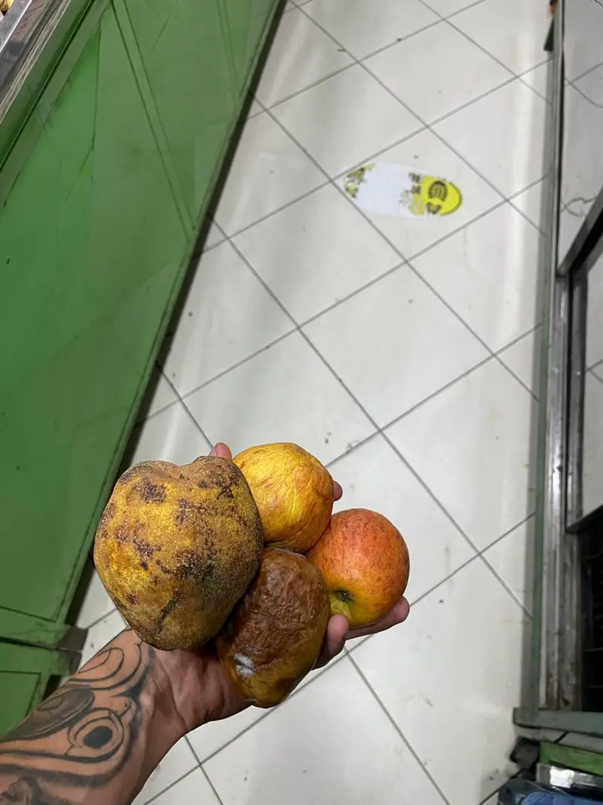
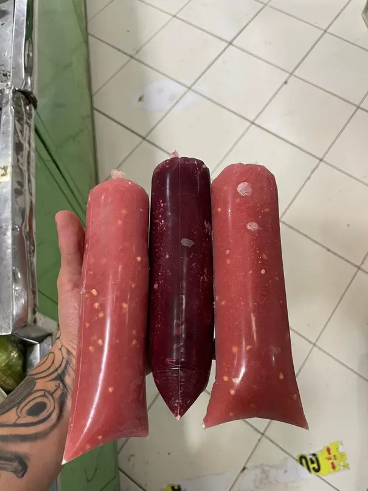
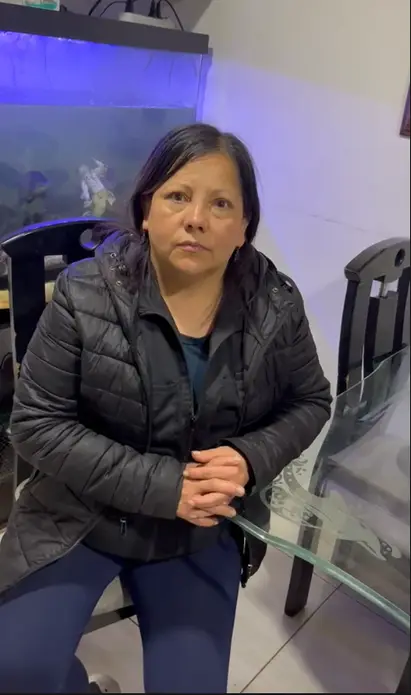

≈ $800.000 por semana
En producto perdido, cerca de $41,6 millones al año. Es una estimación de la propietaria: todavía no está medido.
Proyecto final · Lean UX
«Frescura bajo control»
Detección temprana del deterioro de frutas y verduras en un fruver de Suba Bilbao, Bogotá.
FrescoAlerta · «Fruta en su punto, siempre a tiempo»
La fruta y la verdura se revisan a ojo todos los días. Cuando se nota el daño, ya es tarde.
≈ $800.000 por semana
En producto perdido, cerca de $41,6 millones al año. Es una estimación de la propietaria: todavía no está medido.
Hacen un inventario al final del día para decidir qué comprar, pero no se anota lo que se daña ni cuánto tarda en dañarse.





Lo más molesto es estar pendiente y mirando la fruta: eso quita tiempo.
Idea expresada por Luz Mery en la entrevista (paráfrasis).
Cuatro pasos para saber qué vender primero y qué retirar, antes de perderlo.
Sensores en los estantes miden temperatura, humedad y gases (ESP32 o Arduino con DHT22 y MQ-135).
Una cámara y un modelo de visión (Teachable Machine) clasifican la madurez por color.
Compras, ventas, descartes y lecturas quedan en una hoja de Google Sheets, con fecha y producto.
Llega una alerta por un medio fácil, como el celular, con la señal del semáforo.
FrescoAlerta es un apoyo a la decisión: no reemplaza el criterio de Luz Mery ni dice si un alimento es apto para comer. El sensor de gases es un indicador indirecto: no mide etileno de forma específica.
Todo normal: se sigue vendiendo como siempre.
Llevarlo adelante en la exhibición y priorizar su venta.
Separarlo para que una persona lo revise: aprovecharlo en pulpa, regalarlo o descartarlo.
Menos producto descartado y compras mejor calibradas con datos.
Menos tiempo y estrés revisando a ojo, y fruta en su punto para familias y restaurantes.
Menos alimento en la basura. En Colombia se pierde o desperdicia el 34 % de los alimentos (DNP, 2016).
−20 %
Meta de validación, no resultado: reducir 20 % el producto descartado frente a una línea base que primero se medirá durante varias semanas. Sobre la estimación de $800.000 semanales, serían unos $160.000 por semana.
Prototipo en desarrollo
Simulación en Wokwi
La primera versión será una simulación en Wokwi (o Tinkercad). Mostrará:
Las piezas físicas (carcasa en 3D y señal de colores en láser) son una propuesta para el FabLab; aún no están fabricadas.
Líder del proyecto
Contacto y entrevista con Luz Mery, validación con la usuaria, video pitch y revisión del documento.
Prototipo y diseño
Sensores y simulación en Wokwi, visión artificial con Teachable Machine, diseño de diapositivas, FabLab, registro de datos y alertas.
Universidad EAN · Trend + Tech · Metodología Lean UX · Noviembre de 2026